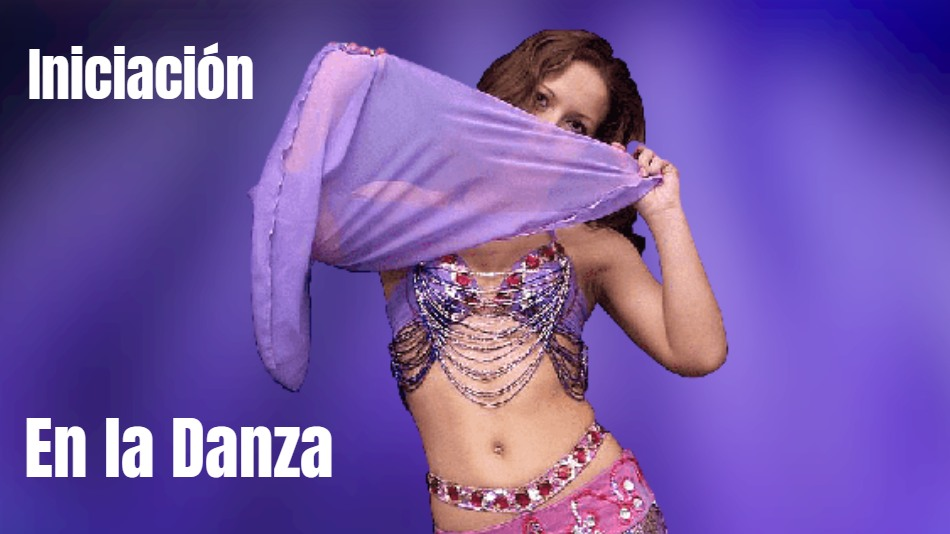

Nivel Inicial 2022
25-2-2022
Las clases de verano se acaban, comienza el nuevo ciclo de iniciación a la danza. Aprenderas la base de distintos ritmos.
Comenzá a sacar tu bailarina interior. Inicio el 14 de marzo. Lunes y miercoles 18:30h
Pedí más información en el formulario de consulta en la sección "Contacto".